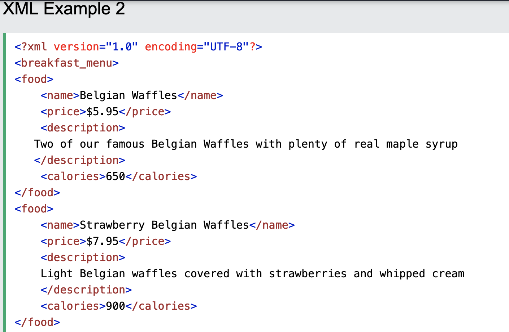

XML stores and transports data. It has no pre-defined tags like in HTML. It is an extensible markup language. It separates information from presentation. It is both machind and human readable.
Hierarchical structure of XML is: root element followed by child of root element, then the sibling of root element and it' children. Important XML standards: AJAX, DOM, XPath, XSLT, xQuery, DTD, Schema, Services.
An example of XML is:
Describing about a breakfast-menu which can be the root element.'food' can be its child element and then, the name, price, calories, location and descripton can be the child of food.
JavaScript is an object based client-side scripting language interpreted by a web browser. It can be used to respond to events such as moving the mouse, clicking a botton and loading a web page. Pop-up windows, image slideshow, animation and calculations can be done with JavaScript. JavaScript can be coded with opening and ending tags of "script". It can be used either of head or body element within HTML document.
JavaScript is related to html in a way that it can be used with a tag "script" tag within body or head element. It some of the functions that a CSS does, but some of them have been replaced by CSS in modern developers such as :hover pseudocode. Javascript manipulates DOM (Document Object Model). DOM defines every element on a web page.
Here are a some APIs of JavaScript- jQuery—works with JavaScript and provides easy ways to dynamically manipulate the CSS properties of elements, detect and react to events (such as mouse movements), and animate elements on a web page, such as image slideshows
- Ajax
- Vue
- React
- Angular
alert()method is a message box that come at the beginning. write() method helps to write. Event and event handelers are methods of mouse, such as (click=onclick, mouseover=onmouseover mouseout=onmouseout etc.) Prompt is a method that requests data and can be used with a variable.
Suppose a car an object, it's properties are color, year, model and its elements are hood and trunk, it's methods are opening the hood and trunk. This can be displayed in JavaScript as:
- car.hood.open()
- car.hood.close()